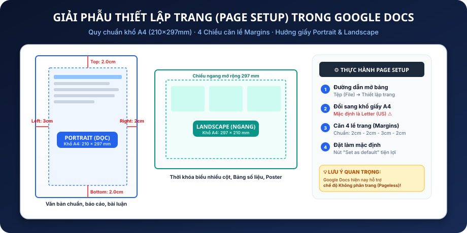
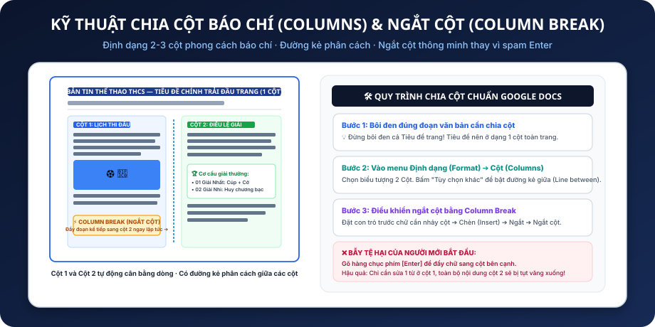
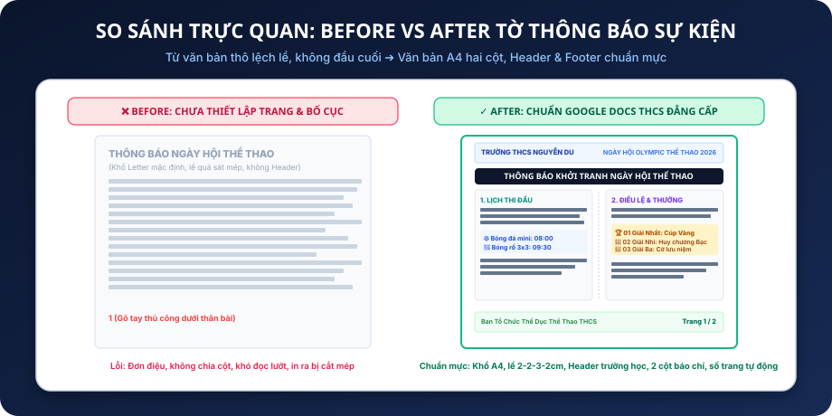

Khám phá bí kíp biến văn bản thô lệch lề thành ấn phẩm xuất bản chuẩn A4: Căn 4 lề trang, phân biệt Portrait & Landscape, đánh số trang tự động và định dạng 2 cột báo chí bắt mắt!
Khổ A4 chuẩn Việt Nam & 4 lề trang Nghị định 30.
Đầu trang trường học, chân trang bản quyền & Different 1st page.
Đánh số trang tự động, bắt đầu từ trang 2 khéo léo.
Chia 2-3 cột báo chí và điều khiển ngắt cột thông minh.
Sau 100 phút học tập và thực hành, em sẽ tự tin xử lý trọn vẹn bố cục bất kỳ trang văn bản nào:
Biết đổi từ Letter sang khổ A4 (210×297mm), căn lề chuẩn (Trên 2cm, Dưới 2cm, Trái 3cm, Phải 2cm) và chọn Portrait/Landscape.
Tạo đầu trang mang tên trường học/môn học lặp lại đồng bộ. Bật tùy chọn "Different first page" để giữ bìa báo cáo trang trọng.
Insert Page Numbers chuẩn ở góc chân trang bên phải, định dạng dạng "Trang X" hoặc "X/Y", không bao giờ gõ tay thủ công.
Chia văn bản thành 2-3 cột báo chí có đường kẻ giữa và dùng lệnh Column Break thay vì bấm phím Enter 20 lần.
Nhiều học sinh THCS gặp rắc rối khi gửi tài liệu đi in hoặc nộp bài cho thầy cô:
Google Docs sinh ra ở Mỹ nên ngầm định chọn khổ giấy Letter (216×279mm). Nhưng toàn bộ máy in và sách vở Việt Nam dùng khổ A4 (210×297mm). Khi in sẽ bị hụt chiều dài và méo bố cục!
Khi đóng gáy lò xo hoặc bấm kim mép trái, nếu để lề trái 1.27cm (0.5 inch), gáy sách sẽ bấm đè mất 2 chữ đầu dòng của học sinh. Lề trái luôn cần tối thiểu 2.5cm đến 3cm.
Tài liệu nhiều trang in ra rơi rớt bị lẫn lộn thứ tự. Nếu có số trang và Header tên học sinh + trường lớp, bất kỳ ai nhặt được cũng biết ngay trang mấy của ai!
Quan sát 4 chiều lề trang và sự khác biệt giữa khổ Dọc (Portrait) và khổ Ngang (Landscape):

Chọn đúng chiều xoay giấy giúp nội dung không bị dồn ép hay tràn trang vô lý:
Việt Nam có quy định quốc gia cực kỳ rõ ràng về lề của một văn bản chuẩn chỉnh:
Đủ không gian cho Header mà không đè lên nội dung đầu trang.
Chừa chỗ cho Footer và số trang không bị mép máy in cắt phạm.
Rộng nhất! Dành cho việc bấm ghim, kẹp hồ sơ và đóng gáy sách.
Giúp mép phải văn bản thoáng đãng, dễ theo dõi.
Google Docs đã phát triển chế độ Pageless để xem tài liệu không giới hạn kích thước:
Mỗi trang có kích thước giấy xác định (như A4). Có khoảng cách trắng giữa các trang, có Header, Footer và số trang cố định.
Tài liệu cuộn dài liên tục như một trang web. Bảng biểu và ảnh lớn tự động giãn nở vô hạn sang hai bên mà không bao giờ bị cắt đôi giữa 2 trang.
Chuyển đổi: Tệp (File) ➔ Thiết lập trang ➔ Chọn tab "Không phân trang" (Pageless) hoặc tab "Trang" (Pages).
Hãy nhấp chọn đáp án đúng cho từng tình huống dưới đây để ghi điểm:
Chỉ với 2 bước cực kỳ đơn giản để bước vào chế độ thiết kế đầu trang:
Di chuột lên khoảng trắng cách mép trên giấy khoảng 1–2cm rồi nhấp đúp chuột trái. Đường nét đứt màu xanh sẽ hiện ra báo hiệu em đã vào vùng Đầu trang (Header)!
Trên thanh menu bấm: Chèn (Insert) ➔ Đầu trang và chân trang (Headers & footers) ➔ Đầu trang (Header).
• Góc trái: TRƯỜNG THCS NGUYỄN DU · LỚP 7A
• Góc phải: MÔN TIN HỌC · BÀI TẬP DỰ ÁN (Thêm đường kẻ mảnh mờ phía dưới để tạo ranh giới tinh tế).
Đây là điểm khác biệt giữa một học sinh nghiệp dư và một người thành thạo Google Docs:
Trang 1 thường là Trang bìa (có ảnh lớn, tên đề tài, tên tác giả). Nếu Header và Số trang hiện lù lù ở trên đầu trang bìa thì sẽ cực kỳ tức mắt và xấu xí!
Khi đang ở trong Header của trang 1, hãy tích vào ô kiểm:
☑ Trang đầu tiên khác nhau (Different first page)
Ngay lập tức, Header của Trang 1 trở thành vùng trống độc lập. Em có thể xóa sạch Header trang 1 mà các trang sau vẫn giữ nguyên!
Trang 1: Trống Header · Trống Số trang.
Trang 2, 3, 4...: Tự động hiện Header và Số trang liên tục!
Đừng bao giờ tự gõ con số 1, 2, 3 bằng tay vào chân trang!
Học sinh nhấp đúp vào Footer rồi gõ phím số 1. Hậu quả là tất cả mọi trang trong tài liệu đều hiển thị số 1 vì Footer có tính chất lặp lại giống nhau!
Vào menu Chèn (Insert) ➔ Số trang (Page numbers). Google Docs sẽ đưa ra 4 ô vuông mẫu vị trí (Đầu trang/Chân trang và Bắt đầu từ trang 1 hay trang 2).
Sau khi chèn số trang, em có thể gõ thêm chữ trước hoặc sau:
Ví dụ gõ chữ: Trang trước số, và chèn thêm Số trang sau dấu / để thành Trang 2 / 10!
Tại sao các tờ báo Thiếu niên Tiền phong, Khăn Quàng Đỏ đều chia bài viết làm 2-3 cột?
Dòng chữ kéo dài từ mép trái sang mép phải khổ A4 khiến mắt phải đảo quá xa. Chia 2 cột tạo độ dài dòng lý tưởng (45–60 ký tự), đọc nhanh hơn gấp đôi!
Biến tài liệu thông báo khô khan thành một tờ báo tường sinh động, hiện đại, thích hợp cho sự kiện thể thao, hội trại, văn nghệ.
Khi có nhiều đoạn văn ngắn và danh sách môn thi đấu, chia 2 cột giúp tận dụng tối đa diện tích giấy, không để thừa khoảng trống vô ích.
Quan sát cấu trúc 2 cột có tiêu đề trải rộng và đường kẻ phân cách ở giữa:

Muốn đoạn văn bản mới nhảy ngay sang đỉnh cột thứ 2? Hãy dùng vũ khí chuẩn mực:
Học sinh đặt con trỏ ở cuối cột 1 rồi gõ liên tiếp 15–20 phím [Enter] cho đến khi chữ bị đẩy sang cột 2.
Đặt con trỏ chuột ngay trước chữ cái đầu tiên của đoạn văn muốn nhảy cột.
Hai công cụ ngắt mạnh mẽ nhất trong Google Docs mà mọi học sinh cần phân biệt:
Đẩy toàn bộ nội dung phía sau con trỏ sang hẳn một Trang giấy mới. Dù trang hiện tại còn trống một nửa giấy, phần tiếp theo vẫn luôn bắt đầu ở đầu trang sau.
Dùng cho: Hết một chương lớn, bắt đầu trang Mục lục, chuyển sang Phụ lục.Chỉ hoạt động khi tài liệu đang chia 2 hoặc 3 cột. Đẩy nội dung sang Cột tiếp theo ngay trên cùng một trang giấy.
Dùng cho: Tách riêng Cột Lịch thi đấu và Cột Cơ cấu giải thưởng.Thử nghiệm thay đổi hướng giấy, khổ A4, lề trang, 2 cột và Header/Footer ngay trên mô hình sống:
Em đang làm cẩm nang 5 trang cho lớp. Hãy chọn đúng phương án cài đặt chuẩn:
Bạn Nam vừa nộp bản tin CLB Bóng rổ nhưng mắc phải 3 lỗi lớn. Em có phát hiện ra không?
Nam chưa chuyển sang khổ A4 (210×297mm) nên in ra bị co ngắn chiều dọc.
Thay vì dùng Column Break, Nam gõ Enter liên tục khiến dòng bị xô lệch.
Hậu quả là sang trang 2 và trang 3 vẫn bị dính con số "1" không đổi.
Cùng ngắm nhìn sự biến đổi ngoạn mục từ bản nháp thô sang ấn phẩm chuyên nghiệp:

Em đóng vai trò Trưởng ban Truyền thông Chi đội, soạn thảo tờ thông báo gửi toàn trường:
1. File Google Docs: Chia sẻ link quyền Commenter/Editor cho thầy cô.
2. File PDF xuất bản: Tải về máy dạng PDF (Tệp ➔ Tải xuống ➔ Tài liệu PDF .pdf) để kiểm tra độ sắc nét của lề trang khi in!
Áp dụng toàn bộ kiến thức buổi 7 để thiết kế giấy mời / thông báo họp lớp trang trọng:
Chọn khổ A4 dọc hoặc ngang tùy em sáng tạo. Lề trái luôn tối thiểu 2.5cm.
Header: "CHI ĐỘI 7A · ĐẠI HỘI CHI ĐỘI". Footer kèm số trang tự động.
Chia 2 cột: Cột 1 (Thời gian & Địa điểm), Cột 2 (Nội dung chương trình họp).
Chúc mừng em đã hoàn thành xuất sắc chặng 2 về bố cục trang văn bản! Hãy lưu lại các phím tắt và nguyên tắc vàng:
| Ctrl + Enter | Ngắt trang mới (Page break) ngay lập tức |
| Ctrl + Alt + O + H | Mở nhanh Header (Đầu trang) |
| Double Click mép | Bật/tắt chế độ sửa Header hoặc Footer |
| Insert ➔ Break | Ngắt cột báo chí (Column break) |
Nhấp chuột trực tiếp vào bất kỳ thẻ trạm nào trên không gian 3D để phi thuyền camera phóng to vào trạm đó!
• 15 phút: Tình huống thực tế & Khổ giấy A4 vs Letter, Căn 4 lề trang.
• 20 phút: Header, Footer, Different first page & Số trang tự động.
• 20 phút: Định dạng 2 Cột báo chí & Column Break.
• 30 phút: Thực hành tổng hợp Tờ thông báo Ngày hội thể thao 30đ.
• 15 phút: Quiz 10 câu & Giao nhiệm vụ về nhà.
"Tại sao khi em bấm ghim mép trái một tập bài văn nộp cô giáo, nếu lề trái quá hẹp thì sẽ xảy ra sự cố gì?"
90% học sinh sẽ thử gõ số 1 vào chân trang và thắc mắc tại sao mọi trang đều ra số 1. Hãy cho học sinh tự vấp phải lỗi này trước khi chỉ ra tính năng Insert ➔ Page numbers!
| Space / → | Chuyển sang trạm tiếp theo |
| ← | Lùi về trạm trước đó |
| O | Xem sơ đồ không gian 3D (Overview) |
| Escape | Đóng phóng to hình ảnh hoặc đóng cửa sổ trợ giúp |
| ? | Bật/tắt hộp thoại trợ giúp này |